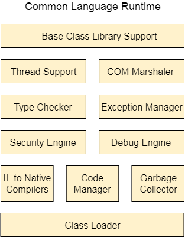

what is .Net framework :
.NET is a framework to develop software applications. It is designed and developed by Microsoft and the first beta version released in 2000.
It is used to develop applications for web, Windows, phone. Moreover, it provides a broad range of functionalities and support.
This framework contains a large number of class libraries known as Framework Class Library (FCL). The software programs written in .NET are executed in the execution environment, which is called CLR (Common Language Runtime). These are the core and essential parts of the .NET framework.
This framework provides various services like memory management, networking, security, memory management, and type-safety.
The .Net Framework supports more than 60 programming languages such as C#, F#, VB.NET, J#, VC++, JScript.NET, APL, COBOL, Perl, Oberon, ML, Pascal, Eiffel, Smalltalk, Python, Cobra, ADA, etc.
Following is the .NET framework Stack that shows the modules and components of the Framework :
The .NET Framework is composed of four main components:
- Common Language Runtime (CLR)
- Framework Class Library (FCL),
- Core Languages (WinForms, ASP.NET, and ADO.NET), and
- Other Modules (WCF, WPF, WF, Card Space, LINQ, Entity Framework, Parallel LINQ, Task Parallel Library, etc.
CLR (Common Language Runtime)
It is a program execution engine that loads and executes the program. It converts the program into native code. It acts as an interface between the framework and operating system. It does exception handling, memory management, and garbage collection. Moreover, it provides security, type-safety, interoperability, and portablility. A list of CLR components are given below:
FCL (Framework Class Library)
It is a standard library that is a collection of thousands of classes and used to build an application. The BCL (Base Class Library) is the core of the FCL and provides basic functionalities.

WinForms
Windows Forms is a smart client technology for the .NET Framework, a set of managed libraries that simplify common application tasks such as reading and writing to the file system.
ASP.NET
ASP.NET is a web framework designed and developed by Microsoft. It is used to develop websites, web applications, and web services. It provides a fantastic integration of HTML, CSS, and JavaScript. It was first released in January 2002.
ADO.NET
ADO.NET is a module of .Net Framework, which is used to establish a connection between application and data sources. Data sources can be such as SQL Server and XML. ADO .NET consists of classes that can be used to connect, retrieve, insert, and delete data.
Entity Framework
It is an ORM based open source framework which is used to work with a database using .NET objects. It eliminates a lot of developers effort to handle the database. It is Microsoft's recommended technology to deal with the database.
Parallel LINQ
Parallel LINQ or PLINQ is a parallel implementation of LINQ to objects. It combines the simplicity and readability of LINQ and provides the power of parallel programming.
It can improve and provide fast speed to execute the LINQ query by using all available computer capabilities.
Apart from the above features and libraries, .NET includes other APIs and Model to improve and enhance the .NET framework.